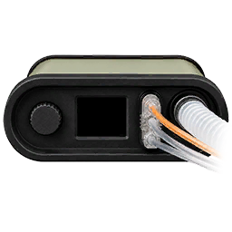

Ventilator
40
Ventway Sparrow. Turbine driven, so it needs no oxygen to ventilate. Power is what runs out.
Every mode guarantees one thing and lets the other float. The danger is always in the one that floats.
You set the volume. The machine delivers exactly that every mandatory breath, at whatever pressure it takes. Synchronised means it waits a fraction for the patient's own effort; pressure support tops up breaths they take in between.
You know precisely what minute ventilation they are getting, which is what you want when you are also controlling CO2 in a head injury.
Volume is guaranteed so pressure is not. If the lung stiffens, the machine forces the set volume in at whatever pressure that now needs. Peak pressure is the number that moves when the patient changes.
You set the pressure. The machine goes to it and holds it, and whatever volume that moves is whatever it moves.
This is the mode for a lung you do not trust: blast, aspiration, contusion. Pressure is capped by definition so you cannot barotraumatise them by accident.
Pressure is safe and volume is not guaranteed. If the lung stiffens further, the same pressure moves less air and they quietly hypoventilate. Watch delivered tidal volume and EtCO2.
No set rate and no guaranteed breath. Constant positive pressure splints the airway open and each breath the patient starts gets a boost.
Right for a casualty who is breathing but tiring, or who has an oxygenation problem rather than a ventilation one.
Requires a reliable respiratory drive. On a heavily sedated, opiated or head-injured casualty the machine will sit there supporting breaths they are not taking.
Fixed mandatory breaths, trigger off. It will not synchronise with anything.
Compressions produce pressure changes that look exactly like a patient trying to breathe, so a synchronised mode reads every compression as an effort and stacks breath on breath. Intrathoracic pressure climbs, venous return falls, and the machine makes your compressions worse while trying to help.
Change it back after ROSC.
The Sparrow draws ambient air, so it ventilates indefinitely as far as gas goes. Oxygen is optional enrichment up to 95%. The clock that matters is electrical.
Drain is not flat. The turbine works harder against high PEEP, a fast rate and stiff lungs, so the settings that keep a bad casualty alive are the ones that eat the battery.
| Settings | Load | Runtime |
|---|---|---|
| PEEP 5, RR 12, PIP 20 | 1.02x | 54 min |
| PEEP 10, RR 18, PIP 30 | 1.39x | 40 min |
| PEEP 15, RR 24, PIP 40 | 1.82x | 30 min |
| PEEP 20, RR 35, PIP 50 | 2.46x | 22 min |
Vehicle power with the engine running stops the drain and recharges over 90 minutes. LOW BATTERY at 25%, BATTERY CRITICAL at 10%, and at zero the vent stops and hands the casualty back to be bagged. It never dies without warning twice first.
Menu structure follows the real device.
MENU
ADV. SETTINGS
BRIGHTNESS
ALARM VOLUME
TECH MODE
Brightness and alarm volume are dial edited in place. NIGHT is the Robust setting: the screen drops to a faint glow that is unreadable to the naked eye and lifts back to normal under image intensifiers. Selecting it also drops the alarm volume once, which you can then turn back up and it stays.
